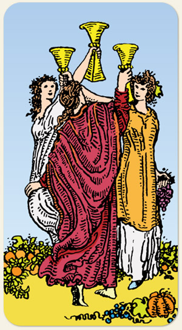

3 de Copas
Brinde, celebração, troféu, festa, rito pagão, rito antigo de abundância e prosperidade, apego ao passado, saudosismo, o Três é criatividade e a Água é criação.
Positivo: Alegria, união, celebração, reencontro, bom humor, agradecimento, felicitações, nostalgia. estar com alguém que se ama.
Negativo: Reuniões infames, reclamação, difamação, banalização, conversas superficiais, a festa pela festa, excessos, uma boemia irresponsável.
Símbolos:
Cores: Cor, Cor, Cor.